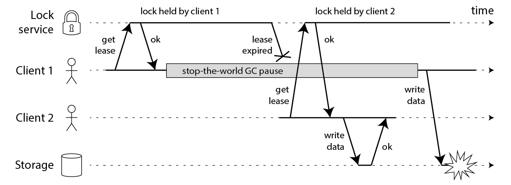

Перевод статьи Мартина Клипмана. Оригинал по ссылке.
Как часть исследования для моей книги, я встретил алгоритм Redlock на сайте Redis. Алгоритм утверждает, что он реализует отказоустойчивые распределенные блокировки (точнее сказать, аренды) основываясь на Redis. Этот алгоритм вызывает тревожный звоночек в моем разуме, так что я потратил немного времени, раздумывая о нем и написал эту заметку.
С тех пор есть более 10 независимых реализаций алгоритма Redlock и мы не знаем кто уже полагается на этот алгоритм. Я подумал, что будет полезно опубликовать эту статью. Я не буду тщательно рассматривать другие аспекты Редиса, некоторые из которых я уже критиковал в другой статье.
Перед тем, как я углублюсь в детали редлока, давайте я скажу, что мне вполне нравится Редис и я с успехом испоьзовал его в продакшене в прошлом. Я думаю он хорош, когда вам нужно расшарить какие-то скоротечные, приблизительные, быстроменяющиеся данные между серверами и не будет большой проблемы если вы изредка потеряете эти данные по какой бы то ни было причине. Например, хороший пример использования — счетчик запроосов по IP (для ограничения запросов) и установка IP адреса для UserID (для обнаружения).
Однако, Редис постепенно уходит в сторону управления данными, в котором есть ожидание [от системы] строгой консистентности и долгожевучести данных, что волнует меня, поскольку это не то, для чего создан Редис. Вероятно, распределенная блокировка одна из таких областей. Давайте рассмотрим ее более детальнее.
Для чего используется такая блокировка?
Задача блокировки гарантировать, что среди нескольких узлов, которые могут делать один и тот же кусок работы, только один в действительности делает его (в один момент времени). Эта работа может писать какие-то данные в общую систему хранения, выполнять какие-то вычисления, вызывать какие-то внешние API или что-то подобное. На высоком уравне, есть 2 причины, почему вы можете захотеть блокировку в распределенном приложении: для эффективнсти или корректности. Чтобы различать эти случаи, вы можете задать вопрос "что бы случилось, если бы блокировка была нарушена":
- Эффективность: взятие лока предотвращает от ненужного выполнения одной и той же работы дважды (например, каких-то сложных вычислений). Если блокировка нарушена и 2 узла закончили делать одну и ту же работу, в результате получим незначительное увеличение в стоимости (к конечном счете вы заплатите на 5 центов больше) или незначительное неудобство (например, юзер получит задвоенный емаил).
- Корректность: взятие лока предотвращает конкурентные процессы от наступания друг другу на пятки и путанице в состоянии системы. Если лок нарушен и есть 2 узла с конкурентными раобтами на одном и том же куске данных, в резутьтате будет поврежденный файл, потерянные данные, постоянная неконсистентность, неправильная доза лекарства, выписанного пациенту и другие серьезные проблемы.
Это оба 2 правильных случая для использования лока, но вам нужно четко понимать с каким из них вы имеете дело.
Я буду спорить, если вы используете локи просто для целей эффективности – не нужно для этого использовать редис, запускать 5 серверов и проверять большинство для взятия вашего лока. Вам лучше использовать 1 инстанс редис, возможно, с асинхронной репликацией на secondary инстанс для случая, когда первичный упадет.
Если вы исопльзуете одиночный инстанс редис, конечно вы будете ронять некоторые локи если внезапно редис узел обесточат или что-то пойдет не так. Но если вы используете локи только для оптимизации эффективности и краши не возникают часто, то это не принципиально. Такого рода компромисы – это сценарии, где редис действительно хорош. По крайней мере, если вы полагаетесь на один экземпляр Redis, всем, кто смотрит на систему, ясно, что блокировки являются приблизительными и должны использоваться только для некритических целей.
С другой стороны, Redlock алгоритм с 5 репликами и большинством при голосовании, выглядит на первый взгляд как подходящий для ситуации, в которой ваш лок критически важен для коректности. Я буду приводить доводы против этого – он не применим для этого случая. В этой статье мы допустим, что ваши блокировки важны для корректности и что это серьезный баг, когда 2 разных узла одновременно верят, что они держат один и тот же лок.
Защита ресурса с помощью блокировки
Давайте на минуту забудем о Редлоке и поговорим, как распределенный лок используется в общем (в не зависимости от частных алгоритмов блокировки). Важно помнить, что блокировка в распределенной системе это не мьютекс в многопоточном приложении. Это более сложный зверь, из-за того, что разные узлы и сети могут выходить из строя независимо друг от друга и разными способами.
Например, скажем у вас есть приложение, в котором клиенту нужно обновить файл в общем хранилище (HDFS или S3). Клиент сначала забирает блокировку, затем читает файл, вносит какие-то изменения, пишет эти изменения назад, и, наконец, освобождает блокировку. Блокировка предотвращает, чтобы 2 клиента не выполняли этот цикл чтения-изменения-записи одновременно, что бы привело к потере обновления. Код модет быть что-от вреоде этого:
// THIS CODE IS BROKEN
function writeData(filename, data) {
var lock = lockService.acquireLock(filename);
if (!lock) {
throw 'Failed to acquire lock';
}
try {
var file = storage.readFile(filename);
var updated = updateContents(file, data);
storage.writeFile(filename, updated);
} finally {
lock.release();
}
}К сожалению, даже если вы имеете безупречный сервис локов, код, приведенный выше сломан. Следующая диаграмма показывает, как вы можете остаться с поврежденными данными:

В этом примере клиент, захвативший лок приостановлен на длительный период времени пока держит лок – например, потому что garbage collector умер. Лок имеет timeout, который является всегда хорошей идеей (в противном случае, краш клиента может оставить лок навсегда поднятым и никогда не освободить). Однако, если GC проснется после истечения таймаута и клиент не понимает, что лок протух, то он может сделать небезопасные изменения.
Этот баг не теоретический: HBase имел эту проблему. Обычно GC имеет очень маленький период, но эти остановка мира известно, что могут длится до нескольких минут – достаточно долго, чтобы лок протух. Даже так называемые "параллельные" GC такие как HotSpot JVM’s CMS не могут полностью работать с кодом приложения – даже они останавливают мир время от времени.
Вы не сможете решить эту проблему вставкой проверки на то, что лок истек перед записью назад в хранилище. Помните, что GC может остановить мир в любой точке, включая точку, максимально для вас неудобную (между последней проверкой и записью).
И если вы чувствуете высокомерие, потому что runtime вашего языка программирования не имеет долгих GC пауз, есть много других причин почему процесс может приостанавливать свою работу. Возможно, ваш процесс пытается прочитать адрес, который еще не загружен в память, поэтому он получает page fault и он приостановится до тех пор, пока адрес не загрузится из диска. Возможно, ваш диск в действительности – это EBS и такое чтение невольно преобразится в сетевой запрос в сеть Amazon. Возможно, есть есть куча других прочессов, конкурирующих за CPU и вы попали в черную дыру в вашем дереве планировщика. Возможно кто-то случайно отправил SIGSTOP процессу. Так или иначе, ваши процессы будут приостановлены.
Если вы все еще не верите мне насчет пауз в процессе, тогда считайте, что запрос на запись в файл может быть отложен перед достижением хранилища. Пакетные сети, такие как Ethernet или IP могут задерживать пакеты как угодно и они это делают: в известом инциденте с гитхабом, пакеты были в сети на приблизительно 90 секунд. Это значит, что процесс приложения может отправить запрос на запись, а он достигнет хранилища через минуту, когда лок уже протух.
Даже в хорошо управляемых сетях такого рода вещи случаются. Вы просто не можете делать предположения о таймингах, вот почему приведенный выше код в корне небезопасен, независимо от того, какой службой блокировки вы пользуетесь.
Защита блокировок с помощью барьеров
Исправление этой проблемы действительно очень простое – вам нужно вставить fencing token в каждый запрос к хранилищу. В этом контексте, fencing token это просто число, которое увеличивается (увеличивается с помощью службы блокировки) каждый раз, когда клиент забирает лок. Это проилюстрировано на следующей диаграмме:

Клиент 1 забирает лок и получает токен 33. Затем, он уходит надолго в паузу и лок протухает. Клиент 2 забирает лок и получает токен 34 (числа всегда увеличиваются) и затем пишет его в хранилище. Затем, клиент 1 просыпается и отправляет запрос на запись в хранилище с токеном 33. Однако, хранилище уже запомнило, что уже обработало запись с большим токеном (34) и поэтому оно отклоняет этот запрос с токеном 33.
Примечательно то, что требуется активная роль хранилища в проверке токенов – отклонение любого запроса на запись, в котором токен пошел назад. Но это не особенно сложно, если вы знаете этот трюк. И при условии, что служба блокировки генерирует строго монотонно инкрементальные токены, это делает блокировки безопасными. Например, если вы используете ZooKeeper как службу блокировки, вы можете использовать zxid или номер версии znode как fencing token.
Как бы то ни было, это подводит нас к первой проблеме редлока – он не имеет какого бы то ни было механизма для генерации fencing токенов. Алгоритм не производит какого-то числа, которое бы гарантированно увеличивалось каждый раз при взятии лока. Это значит, что даже если бы алгоритм был бы в остальном совершенен, его бы все равно нельзя безопасно использовать, потому что вы не можете предотвратить состояние гонки между клиентами, когда один из клиентов приостановил работу или его пакеты задержаны.
И совершенно для меня не очевидно, как изменить редлок, чтобы начать генерировать fencing token. Юникальные рандомные значения, которые он использует не обеспечивают монотонности. Простого сохранения счетчика на одном узле Redis будет недостаточно, поскольку этот узел может выйти из строя. Сохранение счетчиков на нескольких узлах означало бы, что они могут быть не синхронизированы. Вполне вероятно, что вам понадобится алгоритм консенсуса только для генерации токенов ограждения. (Если бы только увеличение счетчика было простым).
Использование времени для достижения консенсуса
Тот факт, что Redlock не генерирует токены ограждения, уже должен быть достаточной причиной, чтобы не использовать его в ситуациях, когда корректность зависит от блокировки. Но есть еще некоторые проблемы, которые стоит обсудить.
В академической литературе наиболее практичная модель системы для такого рода алгоритмов – это асинхронная модель с ненадежной фиксацией ошибок. На простом английском это значит, что алгоритм не делает предположений о таймингах – процессы могут приостановить свою работу на произвольный промежуток времени, пакеты могут произвольно долго задержаться в сети и часы могут произвольно врать – и тем не менее ожидается, что алгоритм будет делать правильные вещи. Учитывая то, что мы обсуждали выше, это очень разумные предположения.
Единственная цель, для которой алгоритмы могут использовать часы – это генерировать таймауты, чтобы избежать вечного ожидания, если учел не работает. Но таймауты не должны быть точными просто потому что есть таймауты запросов, которые не означают, что другие узлы точно упали – с таким же успехом может быть, что в сети наблюдается большая задержка или что ваши локальные часы врут. Когда вы используете в качестве детектора сбоев таймауты, они могут предположительно сказать вам, что что-то пошло не так. (Если бы распределенные алгоритмы полностью обходились бы без часов, то консенсус стал бы невозможным. Взятие лока подобно compare-and-set операции для которой нужен консенсус.)
Заметьте, что редис использует gettimeofday, не монотонные часы, для определения истечения времени жизни ключа. man page для gettimeofday недвусмыссленно сообщает нам, что время, которое он возвращает, подвержено прерывистым скачкам в системном времени– то есть он может внезапно прыгнуть вперед на несколько минут или даже прыгнуть назад во времени (другими словами, если часы ускоряются NTP, потому что они слишком сильно отличаются от сервера NTP или часы вручную установил администратор). Таким образом, если системные часы делают странные вещи, легко может случиться так, что срок действия ключа в Redis истекает намного быстрее или намного медленнее, чем ожидалось.
Для алгоритмов в асинхронной модели это не является большой проблемой – эти алгоритмы, как правило, гарантируют, что их свойства безопасности всегда сохраняются, без каких-либо предположений о времени. Только свойства живучести зависят от таймаутов или какого-либо другого детектора сбоев. На простом языке, это значит, что даже, если тайминги в системе все пошли вразобой (процессы приостанавливаются, есть задержки в сети, часы скачат вперед-назад), производительность алгоритма может пойти ко всем чертям, но алгоритм никогда не сделает некорректное решение.
Однако, редлок не такой. Его безопасность зависит от множества допущений о таймингах – он полагает, что все узлы редис держат ключи одинаковое время перед тем, как они истекут, что сетевые задержки малы по сравнению со сроком годности и что процессы приостанавливают свою работу на значительно меньшее время, чем срок годности.
Взлом редлока, с помощью плохих таймингов
Давайте взглянем на некоторые примеры для демонстрации зависимости редлока от предположений о таймингах. Скажем, система имеет 5 редис узлов (A, B, C, D, E) и 2 клиента (1 и 2). Что случится, если часы на одном из редис узлов прыгнут вперед?
- Клиент 1 возьмет лок на узлах A, B, C. Из-за проблем с сетью D, E недоступны.
- Часы на узле C прыгают вперед, поэтому лок там протухает.
- Клиент 2 берет лок на узлах C, D, E. Из-за проблем с сетью A, B недоступны.
- Клиенты 1 и 2 оба верят, что получили лок.
Похожая ситуация может произойти, если C упадет перед записью лока на диск, и немедленно перезагрузится. По этой причине в редлок документации рекомендована задержка при перезагрузке упавшего узла длительностью по крайней мере, равной времени жизни самого долгоживущего лока. Но эта задержка полагается на достаточно точное измерение времени, и это приведет к ошибке, если часы будут прыгать.
Хорошо, может быть вы думаете, что прыжки часов – это нереалистично, потому что вы уверены в том, что правильно настроили NTP только для того, чтобы замедлять время. В таком случае давайте рассмотрим пример того, как пауза процесса может привести к сбою алгоритма:
- Клиент 1 запрашивает лок на узлах A, B, C, D, E.
- Пока ответ прилетает к клиенту 1 у него приостанавливается процесс (GC).
- Лок истекает на всех узлах редис.
- Клиент 2 берет лок на узлах A, B, C, D, E.
- Клиент 1 просыпается и получает ответы от редис узлов, что он успешно взял лок (они хранились в сетевых буферах ядра клиента 1, пока процесс был приостановлен)
- Клиенты 1 и 2 оба верят, что получили лок.
Обратите внимание, что, хотя Redis написан на C, и, следовательно, не имеет GC, это не помогает нам здесь – любая система, в которой клиенты могут испытывать GC паузы имеет эту проблему. Вы можете сделать это безопасным, только запретив клиенту 1 выполнять какие-либо операции под блокировкой после того, как клиент 2 получил блокировку, например, используя описанный выше подход к ограждению.
Длительная задержка в сети может привести к тому же эффекту, что и пауза процесса. Возможно, это зависит от вашего таймаута пользователя TCP – если вы сделаете тайм-аут значительно короче, чем TTL Redis, возможно, задержанные сетевые пакеты будут проигнорированы, но нам придется подробно изучить реализацию TCP, чтобы быть уверенными в этом. Кроме того, с таймаутами мы снова возвращаемся к точности измерения времени!
Предположения о синхронности Редлока
Эти примеры показывают, что редлок работает корректно, только если вы предполагаете синхронную модель, что означает систему со следующими свойствами:
- ограниченная задержка сети (вы можете гарантировать, что пакеты всегда прибывают с некоторой гарантированной максимальной задержкой)
- ограниченные паузы процессов (другими словами, жесткие ограничения в реальном времени, которые обычно встречаются только в автомобильных системах подушек безопасности и тому подобном)
- ограниченная ошибка синхронизации времени (скрестите пальцы, чтобы потерять ваше время плохого NTP сервера)
Замечу, что синхронная модель не значит именно синхронизированные часы: это значит, что вы полагаете, что знаете верхнюю временную границу задержек сети, пауз и смещений часов. Редлок предполагает, что задержки, паузы и смещения мало зависят от времени лока; если проблема тайминга станет настолько большим как время жизни лока, алгоритм провалится.
В достаточно хорошо функционирующей среде датацентра, предположения о сроках будут выполняться большую часть времени – это известно как частично синхронная система. Но достаточно ли этого? Как только эти временные допущения будут нарушены редлок может нарушить эти свойства безопасности, например, предоставление аренды одному клиенту до истечения срока действия другого. Если вы полагаетесь на правильность своей блокировки, "большая часть времени" не достаточна – вам нужна правильность всегда.
Есть множество доказательств, что небезопасно предполагать синхронную модель системы для большинства практических системных сред. Вспомните об инциденте на GitHub с 90 секундными пакетными задержками. Маловероятно, что Редлок выдержит тест Джепсена (примеры тестов).
С другой стороны, алгоритм консенсуса, разработанный для частично синронных систем (или асинхронная модель с детектором отказов) действительно имеют шанс на работу. Raft, Viewstamped Replication, Zab and Paxos – все попадают в эту категорию. Такой алгоритм должен отказаться от всех временных допущений. Это трудно – так заманчиво предположить, что сети, процессы и часы более надежны, чем они есть на самом деле. Но в запутанной реальности распределенных систем вы должны быть очень осторожны со своими предположениями.
Заключение
Я думаю алгоритм redlock это слабый выбор, "ни рыба ни мясо". Он неоправданно тяжеловесен и дорог для оптимизированного на эффективности лока, но недостаточно безопасен для ситуаций, в которых правильность зависит от блокировки.
В частности, алгоритм делает опасные предположения о таймингах и системных часах (по сути, предполагается синхронная система с ограниченной задержкой в сети и ограниченным временем выполнения операций), и это он нарушает свойства безопасности, если эти предположения не выполняются. Более того, в нем отсутствует средство для генерации токенов ограждения (которые защищают систему от длительных задержек в сети или приостановленных процессов).
Если вам нужны локи только на основе лучших усилий (как оптимизация производительности, не корректность) я бы рекомендовал остановиться на прямом одноузловом лок алгоритме для редис (условный set-if-not-exists для получения лока, атомарный delete-if-value-matches для освобождения лока) и документирование очень четко в вашем коде, что лок только приблизительный и может быть нарушен. Не утруждайте себя созданием кластера из пяти узлов Redis.
С другой стороны, если вам нужен лок для корректности, пожалуйста, не используйте redlock. Вместо него, используйте правильные системы консенсуса, такие как ZooKeeper, возможно, с одним из "Рецептов куратора" (Curator recipes), которые реализуют лок.
Как я упомянул вначале, редис превосходный инструмент, если вы используете его корректно. Ничто из вышеперечисленного не умаляет полезности Redis для его целей. Сальвадор очень предан своему проекту долгие годы и его успех вполне заслужен. Но у каждого инструмента есть ограничения, и важно знать их и планировать соответствующим образом.
Если вы хотите узнать больше, я объясняю эту тему в мельчайших деталях в 8 и 9 главах моей книги (Приведенные выше диаграммы взяты из моей книги). Для изучения как использовать ZooKeeper я рекомендую книгу Junqueira and Reed’s. В качестве хорошего введения в теорию распределенных систем, я рекомендую руководство Christian Cachin, Rachid Guerraoui, Luís Rodrigues.
Спасибо Kyle Kingsbury, Camille Fournier, Flavio Junqueira, and Salvatore Sanfilippo за ревью черновика этой статьи. Любые ошибки, конечно, мои.
Обновление 9 фев. 2016: Сальватор, первоначальный автор редлока, опубликовал опровержение этой статьи. Он делает несколько хороших замечаний, но я остаюсь при своих выводах. Я могу подробнее рассказать об этом в следующем посте, если у меня будет время, но, пожалуйста, сформулируйте свое собственное мнение – и пожалуйста, ознакомьтесь с приведенными ниже ссылками, многие из которых прошли тщательную академическую рецензию (в отличие от любой из наших постов).
З.ы. в оригинальной статье содержится много важных ссылок в тексте, а так же есть список литературы, который я не перенес сюда.